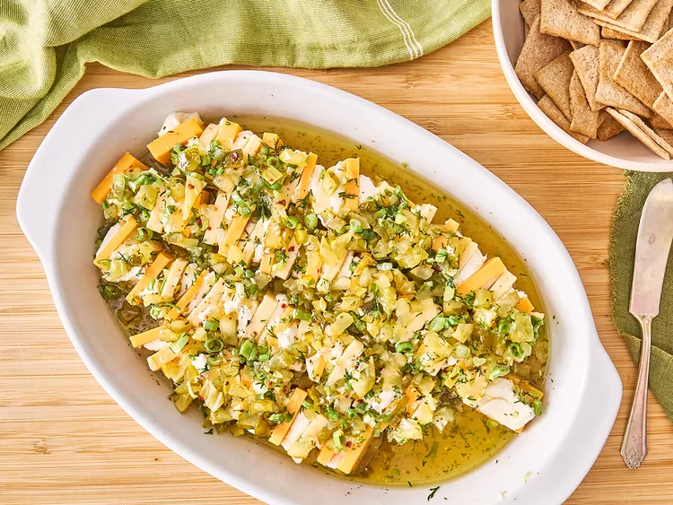

Homepage

Description
This pickle marinated cheese is a fresh and tangy appetizer, made with layered dill havarti, cream cheese, and cheddar cubes in a sweet, spicy dill pickle marinade.
Ingredients
- 8 ounces havarti cheese
- 8 ounces sharp Cheddar cheese
- 6 ounces cream cheese
- 2/3 cup finely chopped sweet and spicy dill pickle chips, such as Wickles® Pickles
- 3 tablespoons finely chopped green onions
- 1 tablespoon finely chopped fresh dill
- 1 tablespoon ranch seasoning
- 1/4 teaspoon crushed red pepper
- 1/4 cup pickle brine from pickle jar
- 1/4 cup apple cider vinegar
- 1/2 cup olive oil
Steps
- Place cheeses in the freezer for 15 minutes while marinade is prepared
- Combine pickles, green onions, dill, ranch seasoning, red pepper, pickle brine, and apple cider vinegar in medium bowl. Stir in olive oil until well blended and set aside.
- Cut each block of cheese in half lengthwise, then cut each piece into 1/4-inch slices, to form square pieces. Cut a small piece off of the cream cheese and place it between alternating flavors of cheese. Place the alternating cheese slices on their sides in the bottom of a small casserole dish. This can be done in 2 to 4 rows depending on the size of the dish.
- Pour the reserved marinade over the cheeses, cover, and refrigerate at least 2 hours or up to overnight. Serve with crackers.